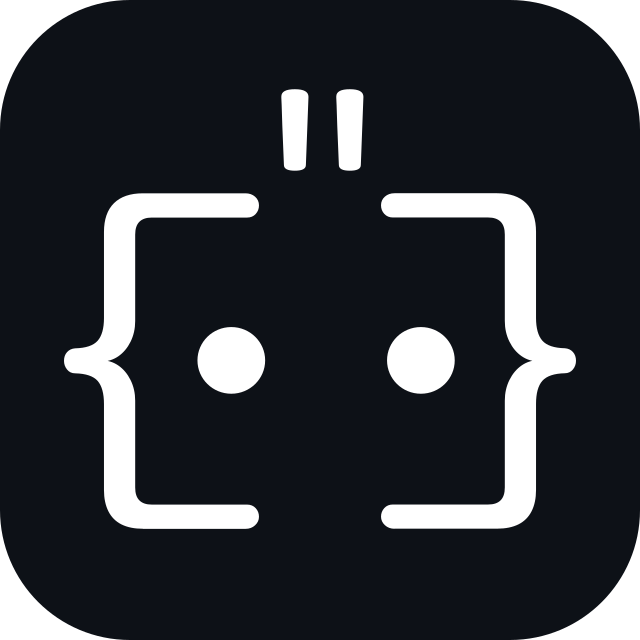

Anthropic's terminal agent for file editing, search, tests and Git.
npm install -g @anthropic-ai/claude-code
Install, uninstall, update, and launch 32+ terminal AI agents from one desktop panel — no more hand-managing global npm and pip installs or juggling terminals.
Universal installers · Apple Silicon & Intel · x64 & arm64 · No account required
curl -fsSL https://cli-launcher.veyl.in/install.sh | sh
Live preview — search, install, and toggle the theme
Point CLI Launcher at the local directory where your projects live. Every agent launches
in a terminal pre-configured to that path — no cd gymnastics.
Install, update, repair, or uninstall any agent and track every version in one place — no hand-editing global Node and Python installs or chasing version clashes.
Open one or many pre-configured terminals and start prompting
@anthropic-ai/claude-code,
aider-chat, or any of the 32+ agents immediately.
Flip one switch and supported agents launch with their auto-approve flags enabled — no more permission prompts mid-task. Perfect for unattended, fully autonomous coding runs. CLI Launcher injects the correct flag per agent, so you never hand-edit a command.
Command injected for Claude Code:
$ claude Claude Code
Claude Code--dangerously-skip-permissions
--dangerously-skip-permissions
 Codex CLI
Codex CLI--dangerously-bypass-approvals-and-sandbox
--yes-always
 Gemini CLI
Gemini CLI--yolo
--cowboy-mode
Every terminal AI agent can be installed by hand — but at 32+ tools that means global clutter, version clashes, and a lot of terminal juggling. Here is the difference.
| Task | Manual (npm i -g / pip) | With CLI Launcher |
|---|---|---|
| Install an agent | Run npm i -g yourself; risks global version clashes. |
One click — version-pinned and tracked. |
| Update everything | Track 32 packages and update each by hand. | Bulk update in a single click. |
| Centralized management | Track 32 packages by hand across global installs. | All agents tracked & updatable from one panel. |
| Launch in a terminal | Open a terminal, cd, retype the command. |
Pre-configured terminal, one click. |
| Switch runtimes | Juggle nvm / pyenv per project. |
Per-agent runtime managed for you. |
| Repair or remove | Manual cleanup of leftover files. | One-click repair or uninstall. |
| Run many agents | Tab-sprawl across scattered terminals. | One panel, all agents, one view. |
32+ agents, grouped by the runtime CLI Launcher manages for you. Every entry carries its
real package string so you can verify it against
npm or pip.
Anthropic's terminal agent for file editing, search, tests and Git.
npm install -g @anthropic-ai/claude-code
Open-source terminal AI coding agent with provider flexibility.
npm install -g opencode-ai
Google's terminal developer assistant for scripts and repo Q&A.
npm install -g @google/gemini-cli
GitHub's agentic CLI powered by Copilot.
npm install -g @github/copilot
Agentic coding assistant with autonomous task loops.
npm install -g @kilocode/cli
OpenAI's lightweight coding agent for the terminal.
npm install -g @openai/codex
Alibaba's Qwen terminal coding agent.
npm install -g @qwen-code/qwen-code
Sourcegraph's agentic coding CLI.
npm install -g @ampcode/cli
Autonomous coding agent that plans and executes edits.
npm install -g cline
Sourcegraph's context-aware coding assistant.
npm install -g @sourcegraph/cody
Fast agentic coding tool focused on large codebases.
npm install -g codebuff
Open, free alternative to Codebuff.
npm install -g freebuff
Lightweight command-driven coding assistant.
npm install -g command-code
Open-source autonomous software development agent.
npm install -g @continuedev/cli
TUI agentic coding tool by Charm.
npm install -g @charmland/crush

AuggieAugment Code's terminal coding agent.
npm install -g @augmentcode/auggie
xAI's Grok terminal coding assistant.
npm install -g @vibe-kit/grok-cli
Voice-driven coding agent by Mario Zechner.
npm install -g @mariozechner/pi-coding-agent
Premier command-line pair programmer. Edits across files, writes commits.
pip install aider-chat
Run LLMs in a real local code-execution environment.
pip install open-interpreter
A command-line productivity tool powered by LLMs.
pip install shell-gpt
Personal AI assistant for the command line.
pip install gptme
Research and development agent with cowboy mode.
pip install ra-aid
Platform for autonomous software engineering agents.
pip install openhands-ai
Block's open-source agentic assistant. Prebuilt binary.
goose · prebuilt binary (managed by CLI Launcher)
Cursor's agent mode exposed as a terminal CLI.
cursor-agent · prebuilt binary
AWS's agentic coding assistant. Prebuilt binary.
q · prebuilt binary (Amazon Q)
Factory.ai's autonomous coding agent. Prebuilt binary.
droid · prebuilt binary (Factory.ai)
Long-running AI coding agent for large tasks. Prebuilt binary.
plandex · prebuilt binary
AI on the command line by Charmbracelet. Prebuilt binary.
mods · prebuilt binary (charmbracelet)
All-in-one LLM CLI with many providers. Prebuilt binary.
aichat · prebuilt binary (sigoden)
Framework for augmenting humans using AI. Prebuilt binary.
fabric · prebuilt binary (danielmiessler)
Manage @anthropic-ai/claude-code,
aider-chat, Gemini CLI, and Amazon Q from a single control panel.
Install, update, and uninstall every agent from one place — no scattered
npm i -g and pip install commands across your terminal history.
Install, update, repair, or uninstall agents dynamically with direct platform execution and real-time feedback.
Instantly open cmd, PowerShell, or bash shells pre-pointed at your workspace path.
Background queries to npm and pip surface update badges the moment a new CLI version ships.
Native packages for Windows (.msi/.exe), macOS (.dmg universal), and Linux (.AppImage/.deb/.rpm).
CLI Launcher is MIT-licensed and built in the open. Read the code, file issues, or ship a PR — it's your machine, your agents, your rules.
CLI Launcher is a free, open-source desktop application that lets you install, update, uninstall, and launch 32+ terminal AI coding agents — such as Claude Code, Aider, Gemini CLI, and Open Interpreter — from a single control panel.
No. CLI Launcher is a management panel, not a sandbox. It installs and launches agents using your system's existing Node, Python, or standalone runtimes; it does not create isolated environments or virtualize dependencies.
CLI Launcher supports 32+ agents across three runtimes: 18 Node-based (Claude Code, OpenCode, Gemini CLI, GitHub Copilot, Codex, and more), 6 Python-based (Aider, Open Interpreter, Shell-GPT, gptme, RA.Aid, OpenHands), and 8 standalone binaries (Goose, Cursor, Amazon Q, Plandex, Mods, aichat, Fabric, and others).
Yes. CLI Launcher is MIT-licensed and free to use. The source code is available on GitHub.
Download a native installer (.dmg, .msi, or .AppImage) from the Downloads page, or run the one-line installer: curl -fsSL https://cli-launcher.veyl.in/install.sh | sh on macOS and Linux, or the install.ps1 PowerShell script on Windows.
YOLO Mode is a toggle that launches supported agents with their auto-approve flags enabled — for example, Claude Code's --dangerously-skip-permissions — so they run unattended without permission prompts. Use it only in trusted working directories.